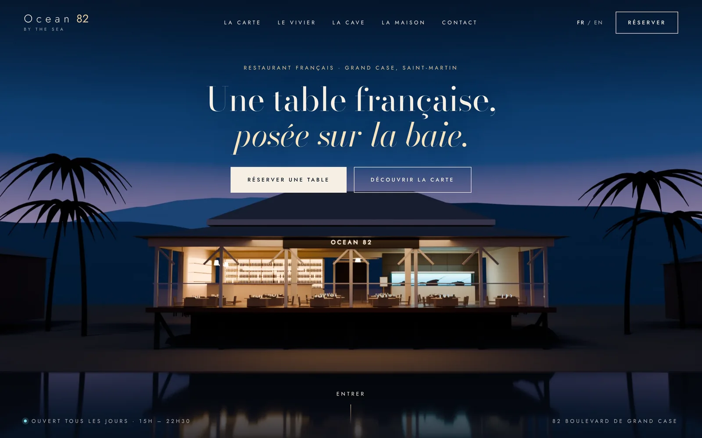
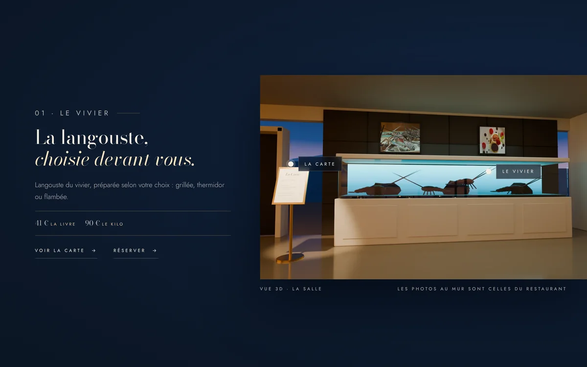
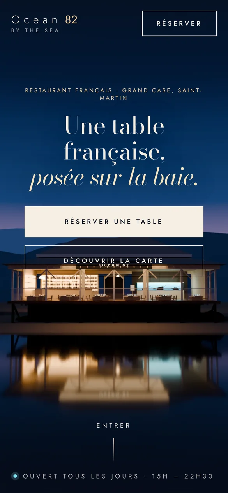
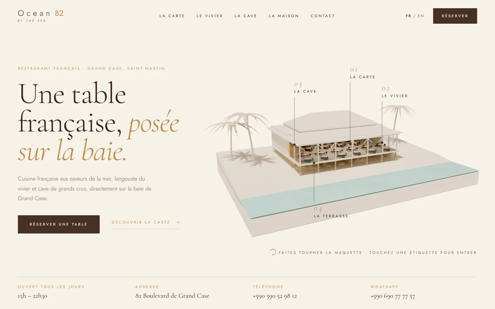
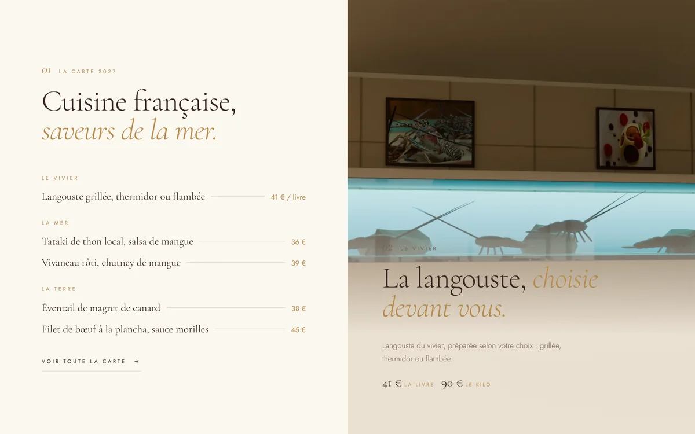
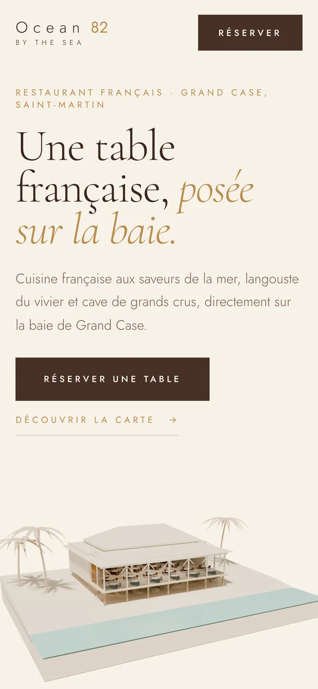
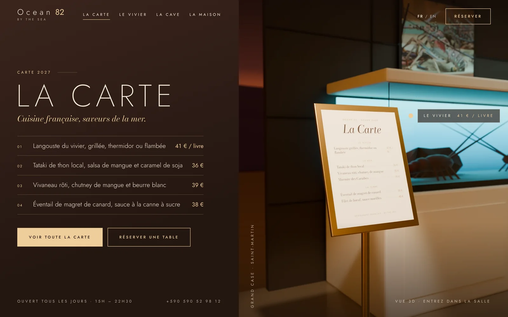
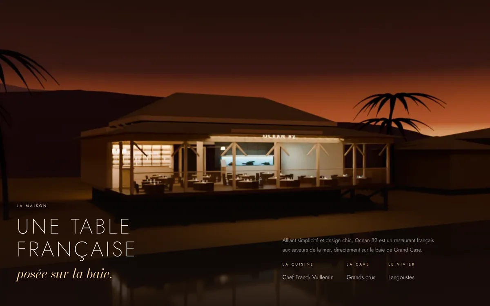
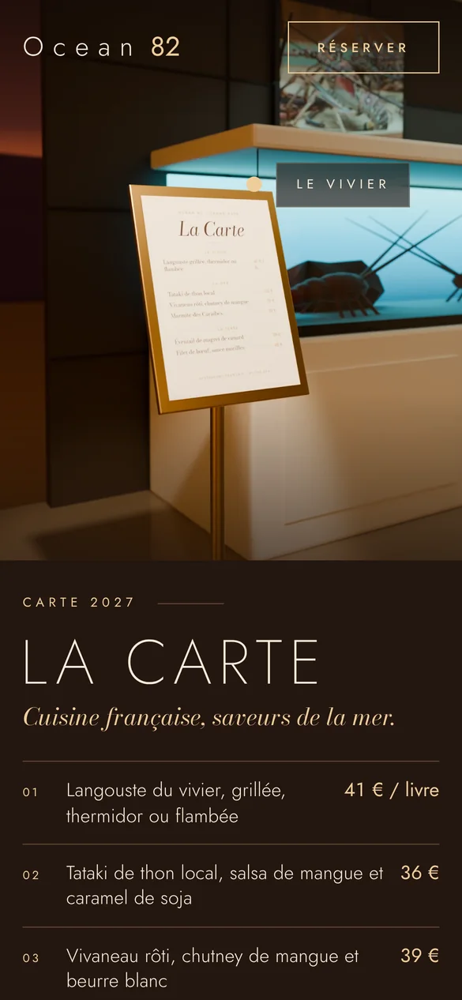

Nouveau cap : luxe épuré, décor 3D stylisé
Trois pistes, avant de construire.
Même contenu, trois ambiances. Le restaurant est modélisé en 3D — pavillon sur pilotis, terrasse, cave vitrée, vivier — et la carte et le vivier passent au premier plan. Du site du Rainbow, les trois reprennent les codes : grande image, capitales fines et espacées, titre en serif avec un mot en italique, boutons rectangulaires, beaucoup d’air. Les couleurs, elles, restent celles d’Ocean 82.
A
Heure bleue
Nocturne et cinématographique. Le restaurant apparaît depuis la baie à l’heure bleue, salle éclairée, vivier et cave visibles de loin.


- La 3DEn faisant défiler, la caméra avance vers le restaurant, entre dans la salle, s’arrête devant le vivier puis devant la carte.
- La carte et le vivierDeuxième bouton de l’accueil, puis premier arrêt de la visite : la langouste et son prix, la carte sur son pupitre.
- Pour quiLa plus spectaculaire, la plus proche de l’esprit du Rainbow — en bleu nuit plutôt qu’en rouge sombre.

B
Maquette
Clair, calme, très épuré. Le restaurant est une maquette d’architecte posée sur la page, comme un objet précieux.


- La 3DOn fait tourner la maquette du bout du doigt ; on touche une étiquette et la caméra plonge dans la pièce.
- La carte et le vivierCe sont les étiquettes 01 et 02 de la maquette : elles servent de menu, avant la cave et la terrasse.
- Pour quiLa plus « grande table » : beaucoup de blanc, une typographie fine, rien de trop.

C
Chocolat
Les couleurs du logo, chocolat et sable. La carte est le premier écran, à côté de la carte posée sur son pupitre devant le vivier.


- La 3DUn écrin : la caméra tourne lentement autour de la carte et du vivier ; un repère permet d’entrer dans la salle.
- La carte et le vivierQuatre plats et leurs prix dès l’arrivée, la langouste du vivier en tête. On lit la carte avant tout le reste.
- Pour quiLa plus fidèle à l’identité actuelle, la plus directe pour un client qui cherche la carte et les prix.
